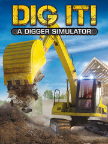

DIG IT! - A Digger Simulator
DIG IT! - A Digger Simulator
Detalles
|  | |
| Tiempo de juego | No Jugado |
| Última actividad | Nunca |
| Añadido | 23/07/2021 17:30:20 |
| Modificado | Nunca |
| Estado de finalización | Not Played |
| Librería | Steam |
| Fuente | Steam |
| Plataforma | PC (Windows) |
| Fecha de lanzamiento | 14/10/2014 |
| Puntuación de la Comunidad | 59 |
| Puntuación de la Crítica | |
| Puntuación de usuario | |
| Género | Simulation |
| Desarrollador | Cape Copenhagen |
| Editor | rondomedia GmbH |
| Característica | Achievements Single Player Stats |
| Enlaces | Community Hub Discussions Guides News Store Page PCGamingWiki Achievements |
| Tag | |
Descripción
Do you love that moment when the engine starts and that rich diesel sound fills the air? Do you get a kick out of moving earth with a variety of high-powered diggers, bulldozers and dump trucks? Do you yearn for the feeling of power that flows through you as the hard steel of the bucket digs into the earth while you remain in keep complete control?

Then open your own digger company in "DIG IT! A Digger Simulator" and delve into the breathtaking world of excavation, complete with realistically modeled professional vehicles! It's no secret that professional digging is a matter of pinpoint precision. Find out if you are a master of your trade and can lead your company to bigger and better things by successfully completing orders in around 30 missions. Take on new jobs to earn money for new vehicles and attachments in a variety of realistic scenarios. What are you waiting for?! Start your engine and become the most successful digger director in town.

Features:
- Become the best digger director in town!
- A variety of high-powered and realistically modeled professional vehicles i.e. excavator, dump truck, bulldozer, wheel loader
- A range of scenarios in and around a vibrant city, including a gravel pit, suburb, road construction site, industrial area and even your own property
- Diverse bucket attachments and ground types provide greater variety
- Demanding tasks require precision and skill
- Customization - Choose your company name and the color of your machines
- Decide which bucket attachment is best suited to each job
- Feel the horsepower of the professional vehicle up close and personal, and have them under your control
- Fully supports the Xbox 360® controller
Cape Copenhagen:

Cape is an independent game developer sporting a small, highly experienced and versatile team of game developers, operating out of Copenhagen, Denmark. Cape was founded in 2008 and has since then shipped approximately 50 games for web, mobile, PC and Mac, in a multitude of genres, for a wide range of audiences, mostly for domestic and international clients. Since 2008 Cape has grown to about 35 people.

A 3D artist is working on the environment and a Programmer is designing the general interface.